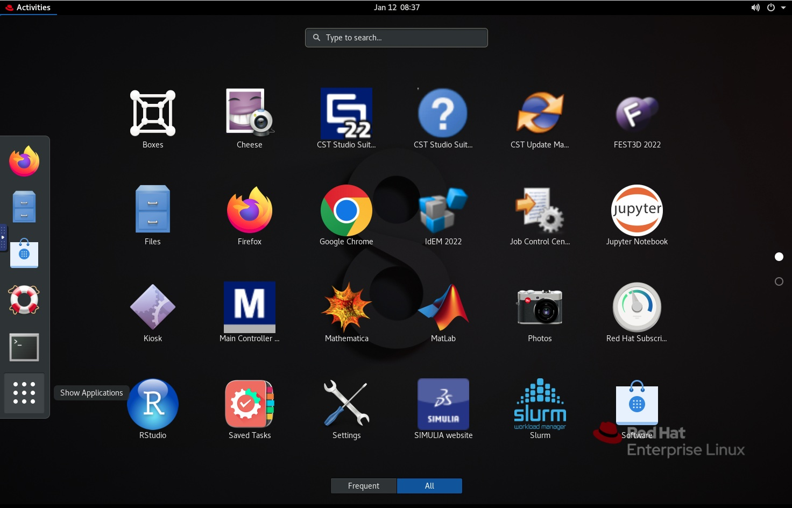

Connecting to Midway
The information here describes how users can connect to Midway to access RCC resources. All users are responsible for knowing and abiding by the RCC User Policy.
Account Credentials
To connect to Midway, you must have a RCC user account (request an account).
Your RCC account uses your UChicago CNetID for the username and the corresponding CNetID password for the password:
Username: CNetID
Password: CNetID password
Copy code
Where ever you see grey boxes like the one above, click the icon in the top right corner of the box to copy the contents to your clipboard. It's especially useful for longer code snippets!
Login Nodes
When we say "connect to Midway," what we're really saying is connect to one of Midway's login nodes. The login nodes are physical parts of the Midway cluster that are connected to the internet and serve as the "foyer" to the system. You connect to the login nodes to manage data, download and install packages, and submit jobs to the compute nodes, as the diagram below depicts.

Upon logging in to Midway, you will automatically be connected to one of several login nodes.
Warning
The login nodes are NOT for computationally intensive work. For running computationally intensive programs, see Running Jobs on Midway.
Login and compute nodes are system-specific
Note that Midway2 compute nodes can only be accessed from Midway2 login nodes, and likewise Midway3 compute nodes can only be accessed from Midway3 login nodes.
Summary of Connection Methods
There are two main ways to connect to Midway, detailed below. This table provides a high level summary of the two:
Connection Method |
Description |
|---|---|
| Secure Shell (SSH) | Command-line (Terminal or Powershell) access to the cluster. Good for users with command-line programming experience, and is typically the most stable. |
| ThinLinc | Provides a graphical user interface (GUI), and thus is more "user friendly" and minimizes need for command-line interaction. Typically less stable than SSH. |
Connecting with SSH
Secure Shell (SSH) is a protocol that provides secure command-line access to remote resources such as Midway.
Step 1: Open an SSH client
Open a Terminal (or iTerm2) window.
Open a Powershell window.
Mobaxterm
Windows users running a version of Windows older than Windows 10’s April 2018 release will have to download an SSH client to connect via SSH. We recommend the MobaXterm, client, although other options are available. Note that MobaXterm provides various functions such as direct file download which may offer a better experience than Powershell alone.
Step 2: At the command line enter:
ssh <CNetID>@midway2.rcc.uchicago.edu
ssh <CNetID>@midway3.rcc.uchicago.edu
Step 3: Provide your CNetID password when prompted. Duo two-factor autentication will request you select from the available 2FA options to authenticate to Midway.
Duo two-factor authentication for user
Enter a passcode or select one of the following options:
1) receive a push code on your Duo app,
2) Receive authentication through your phone number, and
3) get an SMS code.
Passcode or option (1-3):
Note on SSH key-based authentication
In compliance with University security guidelines, 2FA is required with limited exceptions. If you believe you have a justifiable need for SSH key pairs, please contact our Help Desk and describe your situation. Once your justification is received, it will be reviewed by the RCC security team and we will follow up with you as soon as possible.
Step 4: Choose from the available two-factor authentication options and finish the authentication process.

X11 Forwarding
X11 forwarding is a mechanism that allows you to forward a remote application's display to your local machine. To enable X11 forwarding when connecting to a Midway system with SSH, the -Y flag should be included:
ssh -Y <CNetID>@midway2.rcc.uchicago.edu
ssh -Y <CNetID>@midway3.rcc.uchicago.edu
Note for macOS users
The program XQuartz is required to enable trusted X11 forwarding on a Mac.
Connecting with ThinLinc
ThinLinc is a remote desktop server used to connect to Midway and obtain a remote graphical user interface (GUI). We recommend using ThinLinc to use software that requires a GUI.
ThinLinc Web Browser
Point your web browser to the following web address:
https://midway2.rcc.uchicago.edu.

https://midway3.rcc.uchicago.edu.

Proceed to log in with your CNetID and password.
Duo two-factor autentication will request you select from the available 2FA options to authenticate to Midway.
Duo two-factor authentication for user
Enter a passcode or select one of the following options:
1) receive a push code on your Duo app,
2) Receive authentication through your phone number, and
3) get an SMS code.
Passcode or option (1-3):
ThinLinc Desktop Client
Download and install the appropriate ThinLinc client here: https://www.cendio.com/thinlinc/download
Open the ThinLinc client and use the following information to set up your connection to Midway:
Server: midway2.rcc.uchicago.edu
Username: CNetID
Password: CNetID password
Server: midway3.rcc.uchicago.edu
Username: CNetID
Password: CNetID password
ThinLinc will default to open in a fullscreen window that fills all monitors. To change this use Options from the initial login interface.
After clicking the Connect button, Duo two-factor autentication will request you select from the available 2FA options to authenticate to Midway.
Duo two-factor authentication for user
Enter a passcode or select one of the following options:
1) receive a push code on your Duo app,
2) Receive authentication through your phone number, and
3) get an SMS code.
Passcode or option (1-3):
The ThinLinc Interface
Upon successfully logging in via ThinLinc, you will be connected to a login node and presented with a desktop interface. Select Applications tab in the top left corner to access the terminal, file browser, and other utilities.

To view all available applications, click the 3x3 dot grid on the bottom of the Activties Tab:

To copy/paste text between your computer and ThinLinc (when copying code into the Terminal, for example), open the side toolbar by clicking the small blue handle. Click the Clipboard icon. The text field that just open will be synced with the clipboard on the server, so you can copy and paste to and from this text field.

With ThinLinc it is possible to maintain an active session after you have closed your connection to Midway. To disconnect from Midway but maintain an active session, simply close the ThinLinc window. You must have "End existing session" unchecked for this to occur.
To exit ThinLinc and terminate your session completely, simply exit or close the ThinLinc application.